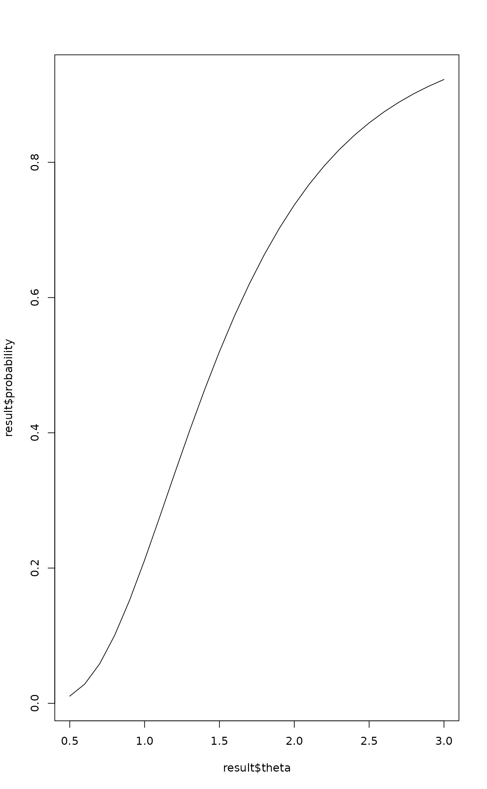

Compute Detection Probability for GLM Outcomes
Source:R/truefind_asymptotic_glm.R
compute_detection_probability_glm.RdExtends the Section 2.1 approximation (Leon et al., 2024, eq. 3) to
arbitrary GLM outcomes via the effective information
\(d_{\text{eff}}\). This is the GLM generalization of
compute_detection_probability.
Arguments
- theta
Numeric (scalar or vector). True treatment effect in the subgroup on the natural scale:
- Ratio measures (HR, OR, IRR)
The ratio itself, e.g., 2.0 for doubling.
- Difference measures (MD)
The mean difference, e.g., 0.5.
- d_eff
Numeric. Effective information in the subgroup. Use the
d_eff_*helpers:d_eff_survival,d_eff_binary,d_eff_count,d_eff_continuous.- c1
Numeric. Screening threshold on the natural scale. For ratio measures: the ratio (e.g., 1.25). For difference measures: the difference (e.g., 0.2).
- c2
Numeric. Consistency threshold on the natural scale. Default: 1.0 for ratio, 0.0 for difference.
- effect_scale
Character.
"ratio"(default) for log-scale effects (HR, OR, IRR);"difference"for identity-scale (MD).- method
Character.
"cubature"or"monte_carlo".- n_mc
Integer. Monte Carlo samples if method = "monte_carlo".
- seed
Integer. RNG seed for Monte Carlo.
- verbose
Logical. Progress messages for vector theta.
Value
If theta is scalar, a single probability.
If vector, a data.frame with columns theta, probability.
Details
The detection criterion (Leon et al., 2024, Section 2.1):
Screening: \(W_1 + W_2 \ge 2k_1\)
Consistency: \(\min(W_1, W_2) \ge k_2\)
with \(W_1, W_2 \sim N(\beta, 8/d_{\text{eff}})\) independently.
For ratio-scale effects, \(\beta = \log(\theta)\), \(k_j = \log(c_j)\). For difference-scale effects, \(\beta = \theta\), \(k_j = c_j\).
See also
compute_detection_probability for the
survival-specific version.
Examples
# \donttest{
# Survival: reproduce Figure 2
d <- d_eff_survival(n_sg = 60, prop_cens = 0.45)
compute_detection_probability_glm(theta = 2.0, d_eff = d)
#> [1] 0.8282823
# Binary: OR = 2.0, event rate 30%
d <- d_eff_binary(n_sg = 100, p_event = 0.30)
compute_detection_probability_glm(theta = 2.0, d_eff = d)
#> [1] 0.7368968
# Count: IRR = 2.0, 80 total events
d <- d_eff_count(total_events = 80)
compute_detection_probability_glm(theta = 2.0, d_eff = d)
#> [1] 0.9634817
# Continuous: mean difference = 0.5, sigma = 1.5
d <- d_eff_continuous(n_sg = 100, sigma_y = 1.5)
compute_detection_probability_glm(
theta = 0.5, d_eff = d,
c1 = 0.2, c2 = 0.0,
effect_scale = "difference"
)
#> [1] 0.7432167
# Power curve
d <- d_eff_binary(100, 0.30)
result <- compute_detection_probability_glm(
theta = seq(0.5, 3.0, by = 0.1), d_eff = d
)
plot(result$theta, result$probability, type = "l")

# }